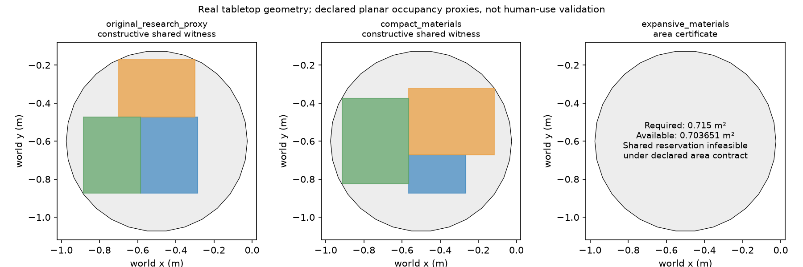

真实桌面测量面积为0.7036511243810306平方米。小资料与两餐位可共存；大资料条件所需0.715平方米，超过面积上界。办公人与用餐人可以跨时段复用坐席，资料则在用餐时仍占表面。独立桌椅是充分解，不能当唯一正确答案。
CPU编译实际耗时4.778秒。本地8B模型完成3次推理，进程耗时88.166秒；两项首轮决定都选择独立桌椅，小资料多添了两件。告知最少新增数0后仍选独立桌椅。这是自定义两工具组件，不能据此评价作者完整Actor或所有VLM。原生完整状态导入与区域绑定耗时9.556秒，6项程序记录包含重复场景/策略，不是6次新生成。

| task | policy | turn | plan | feasible | minimum_within_two_skills | new_objects | scope |
|---|---|---|---|---|---|---|---|
| original_research_proxy | ordinary_compiler | 0 | shared | True | True | 0 | Synthetic planar resource contract on one exposed complete room |
| compact_materials | ordinary_compiler | 0 | shared | True | True | 0 | Synthetic planar resource contract on one exposed complete room |
| expansive_materials | ordinary_compiler | 0 | independent | True | True | 2 | Synthetic planar resource contract on one exposed complete room |
| compact_materials | local_SFT_custom_allocation | 0 | independent | True | False | 2 | Initial independent decision |
| compact_materials | local_SFT_custom_allocation | 1 | independent | True | False | 2 | Oracle-minimum-assisted feedback; not independent repair evidence |
| expansive_materials | local_SFT_custom_allocation | 0 | independent | True | True | 2 | Initial independent decision |
普通求解器和模型使用同一两工具施工库、占用条件与资产。第二次模型输入包含最优新增数量，属于oracle辅助反馈，不能与首次独立推断混合。输出模型是公开联合SFT检查点的FP16/V100适配；没有v10适配器、RL或原生完整Actor复现。原生消息构造和解析来自固定作者源码，allocate_resources是本地新接口。所有物体、姿态和尺寸保留，没生成纸张/餐盘几何，不声称物理稳定、人机工学或完整原任务成功。
6条监督记录分开标注几何可行性与显式少添家具目标，人的主观偏好全部留空。没有训练。旧冻结评分及阈值不变；原评分排除共享工作面，不用本轮占用结果替换旧分数。
Fisher等2015已有活动—物体绑定；本轮核对部分官方C++分支，不宣称跑过旧系统。ScIntBench采用主动交互评测；本轮仅定向读方法和附录，没有运行其模拟器。当前静态占用证明不能代替那些动态指标。
后续必须验证现实描述到活动程序的解释、跨房间施工和强普通优化对照。若只是给出这个正确程序，普通工具已经会做，本轮不能据此宣称需要新Critic训练、偏好反转算法或长期记忆。